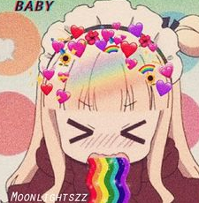

sobre nos
Nossa equipe possui décadas de experiência sendo geeks / nerds! Somos obsessivamente apaixonados por aparelhos e produtos práticos do dia-a-dia.
O nosso objetivo é passar para nossos leitores análises de animes/mangas úteis para nosso público.
Queremos fornecer informações honestas e detalhadas sobre os diferentes animes existentes no mercado e colocar numa lista
e assim este site seja sempre o destino para as pessoas que estão se decidindo entre qual anime/manga ver
Nossa missão é ajudar as pessoas a encontrar os animes que melhor se adequam ao seu gosto e particularidades.
Mas vocês vão dar bola apenas para animes famosinhos?-?
Claro que não meus amigos, iremos por todo os tipo de animes/mangás para vocês acharem os seus estilo e acompanharem om paixão, assim como nós começamos.